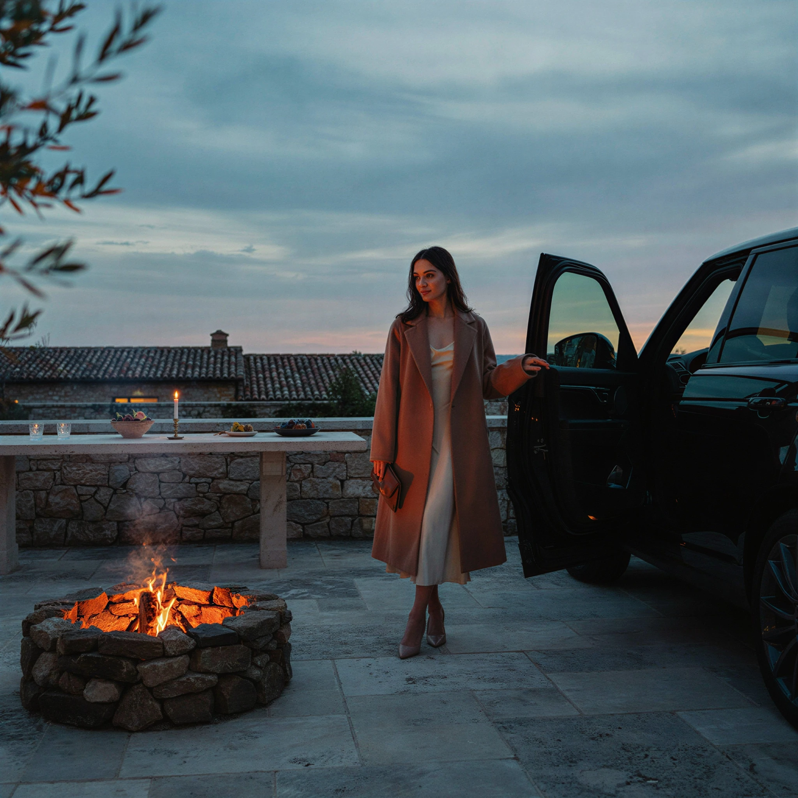
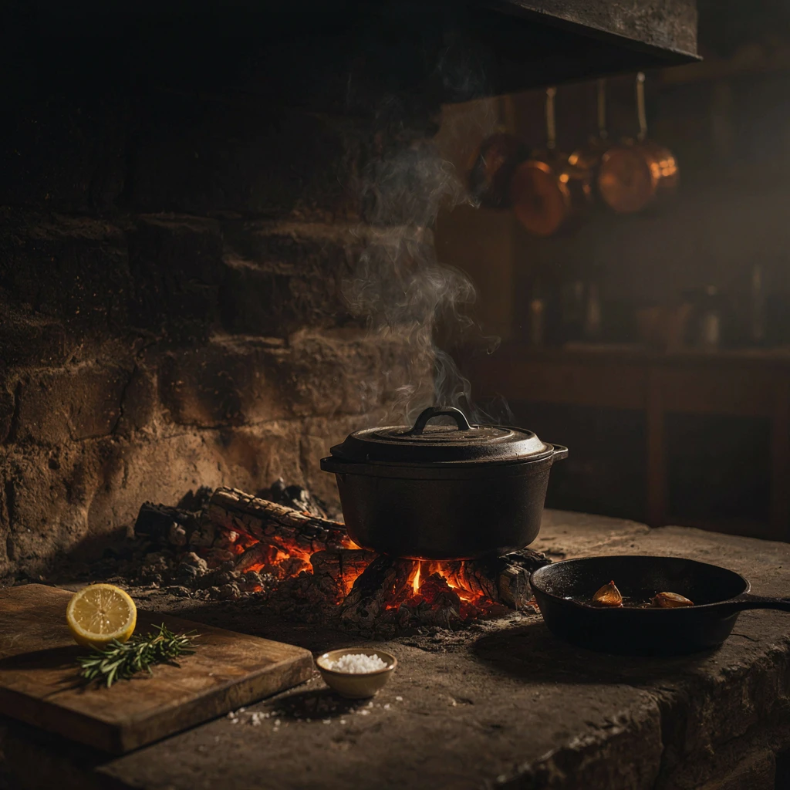
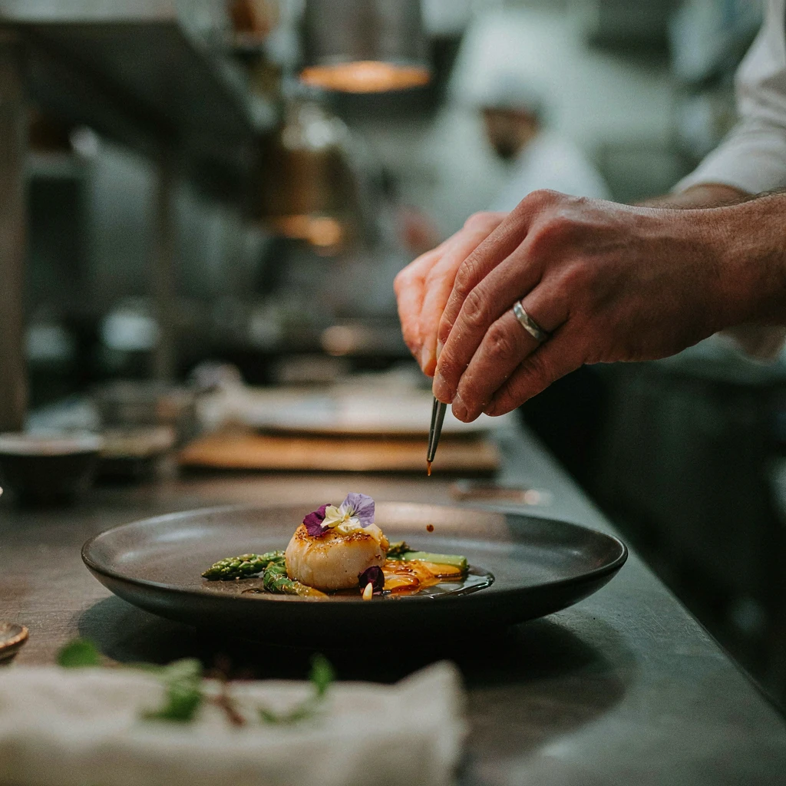

“We wanted a room that felt like the last good hour of the day — warm, unhurried, and a little private.”
The Restaurant
A house built for one sitting.
Solara opened in 2019 in a former boatwright’s loft above Coastline Drive. The brief was simple and slightly stubborn: forty seats, a hearth you can see from the door, and a service that never asks a table to rush the last glass.
The name is a nod to the light that fills the room before service — that long Santa Barbara gold that turns plaster the color of warm bread. We dim with it. By the third course the windows hold only the dark and the candles do the rest.
We are a dinner house. Reservations are taken for a single evening seating, with a short bar list for guests who arrive early. The tasting menu is the spine of the night; a shorter carte is offered at the counter for those who prefer to wander.
The Kitchen
Chef Isla Moreau
Isla cooks with a calm that comes from years of heat. She grew up in Monterey among fishmongers and home orchards, then trained in kitchens that taught her to edit: Lyon for sauce and discipline, San Sebastián for fire and instinct. She returned to California to open Solara with sommelier Ren Sato and a room that could hold both.
Her plates are small, exact, and a little generous at the edges — a second spoon of jus, a last leaf of wild fennel. Guests often notice her in the pass rather than the dining room. She prefers it that way.
- Born
- Monterey, California
- Formed
- Lyon & San Sebastián
- Opened Solara
- Autumn 2019
- Seats
- Forty, by reservation
Influences
Places that still season the work.
Solara is a California restaurant. The memory of other kitchens is kept in the technique, never in the costume.
-
2008
Lyon
A year of reductions, stock, and the patience to let a sauce become itself. Isla still finishes duck the way she was taught: quietly, and without apology for richness.
-
2012
San Sebastián
The hearth as a thinking tool. Ember, plancha, and the idea that smoke can be as precise as salt when you stay close to the fire.
-
2015
Monterey & the Channel
A return to cold water fish, Meyer lemon, and the discipline of buying from people you can name. The crudo station at Solara begins here.
-
2019
Santa Barbara
Wine country at the back door, a garden behind the loft, and a dining room small enough to cook as if every table were a private one.


Culinary Approach
Three rules we cook by.
-
The fire is a station, not a spectacle.
We use live oak for duck, lamb, and late-season fruit. The hearth is visible because guests deserve to see the work, not because we want applause for flame.
-
Acid is a kindness.
Citrus, vinegar, and a clean wine keep richness honest. If a plate cannot take a last squeeze of finger lime, it is not finished.
-
The room is part of the recipe.
Service is paced to conversation. Courses arrive when the table is ready, not when the ticket says they should. A good evening should feel slightly longer than the clock.